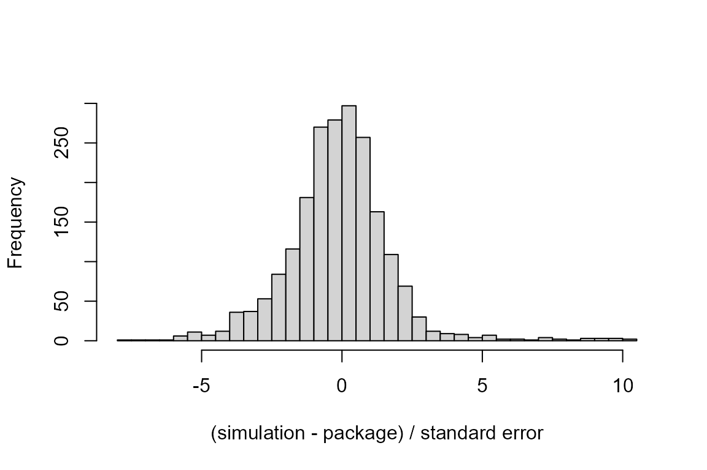

The results of the package are checked in three ways:
- the unit tests (
tests/testthat/) compare the results with an independent Python implementation (inst/validation/python/, using matrix exponentials and adaptive quadrature) and, when the packages are installed, with gsDesign, gsDesign2, rpact and lrstat; - the scripts in
inst/reproduce/recompute sample sizes, numbers of events, analysis times, bounds and powers printed in articles and a statistical analysis plan; - the scripts in
inst/validation/compare the package with patient-level simulations, with the package PWEALL and with the decisions oflrstat::fseqbon().
The last two folders are run by their run_all.R, which
judges every value as PASS (the criterion is met), EXPLAINED (the
criterion is met after a registered explanation, such as an apparent
misprint), FAIL, or INFO (not judged: a published value computed by a
method that the package does not reproduce, or an asymptotic
approximation compared with simulation). The results are installed with
the package, and this article reads them:
judgements <- c("PASS", "EXPLAINED", "FAIL", "INFO")
read_results <- function(folder) {
utils::read.csv(system.file(folder, "results", "summary.csv",
package = "DesignComplexSurvival"))
}
rp <- read_results("reproduce")
vd <- read_results("validation")
count <- function(x, by) {
tab <- as.data.frame.matrix(table(x[[by]], factor(x$judgement, levels = judgements)))
tab$Total <- rowSums(tab)
tab
}Reproduction of published results
The scripts recompute 527 printed values from 16 sources. Each value has a criterion that reflects the rounding of the printed value, for example rounding up for a sample size or agreement to the printed digits for a power.
knitr::kable(count(rp, "source"))| PASS | EXPLAINED | FAIL | INFO | Total | |
|---|---|---|---|---|---|
| Barthel2006 | 44 | 1 | 0 | 0 | 45 |
| Erdmann2025 | 8 | 0 | 0 | 33 | 41 |
| Glimm2010 | 20 | 3 | 0 | 0 | 23 |
| Lakatos1988 | 2 | 0 | 0 | 16 | 18 |
| Lakatos2002 | 0 | 0 | 0 | 16 | 16 |
| Lu2021 | 19 | 1 | 0 | 24 | 44 |
| Luo2019 | 29 | 15 | 0 | 4 | 48 |
| MaurerBretz2013 | 11 | 4 | 0 | 0 | 15 |
| Porcher2002 | 30 | 5 | 0 | 24 | 59 |
| Shih1995 | 11 | 5 | 0 | 4 | 20 |
| Sugimoto2017 | 3 | 18 | 0 | 9 | 30 |
| Tamhane2010 | 68 | 10 | 0 | 0 | 78 |
| Tang2022 | 0 | 16 | 0 | 0 | 16 |
| TorresSaavedra2026 | 3 | 0 | 0 | 0 | 3 |
| Vergote2024 | 9 | 1 | 0 | 6 | 16 |
| Xia2016 | 0 | 0 | 0 | 55 | 55 |
In total 257 values pass, 79 are explained, 0 fail and 191 are not
judged. The sources, criteria and registered explanations are listed in
the README.md and explained.csv of
inst/reproduce/.
Comparison with simulations and other software
labels <- c(fastsurvival = "FastSurvival simulation",
python = "Python simulation",
python_two = "Python simulation, PFS and OS together",
python_calendar = "Python simulation, switching from a calendar time",
danzer = "Estimator of Danzer et al. (2025)",
pweall = "PWEALL",
lrstat_fseqbon = "lrstat::fseqbon()")
tab <- count(vd, "source")
n_scen <- tapply(vd$scenario, vd$source, function(x) length(unique(x)))
tab <- cbind(Route = ifelse(is.na(labels[rownames(tab)]), rownames(tab),
labels[rownames(tab)]),
Scenarios = as.vector(n_scen[rownames(tab)]), tab)
knitr::kable(tab, row.names = FALSE)| Route | Scenarios | PASS | EXPLAINED | FAIL | INFO | Total |
|---|---|---|---|---|---|---|
| Estimator of Danzer et al. (2025) | 2 | 0 | 0 | 0 | 8 | 8 |
| FastSurvival simulation | 5 | 300 | 0 | 0 | 448 | 748 |
| lrstat::fseqbon() | 3 | 142 | 0 | 0 | 0 | 142 |
| PWEALL | 8 | 161 | 0 | 0 | 0 | 161 |
| Python simulation | 5 | 468 | 0 | 0 | 650 | 1118 |
| Python simulation, switching from a calendar time | 3 | 72 | 0 | 0 | 150 | 222 |
| Python simulation, PFS and OS together | 6 | 174 | 0 | 0 | 872 | 1046 |
The quantities with exact counterparts in the package (expected
numbers of events and dropouts by group at calendar times, state
occupation probabilities, survival functions, bounds, the per-patient
covariances of the statistics, and the quantities of PWEALL and lrstat)
are judged. The criteria are 4se (within 4 Monte Carlo
standard errors), 4se_p (within 4 standard errors computed
from the package value), and abs:x or rel:x
(absolute or relative difference at most x):
judged <- vd[vd$judgement != "INFO", ]
knitr::kable(as.data.frame(table(criterion = judged$criterion,
judgement = judged$judgement)))| criterion | judgement | Freq |
|---|---|---|
| 4se | PASS | 396 |
| 4se_p | PASS | 568 |
| abs:0.002 | PASS | 46 |
| abs:1e-4 | PASS | 12 |
| abs:1e-5 | PASS | 22 |
| abs:1e-6 | PASS | 146 |
| rel:0.002 | PASS | 115 |
| rel:1e-6 | PASS | 12 |
In total 1,317 values pass and 0 fail.
The mean, standard deviation and correlation of the log-rank statistics, the power and the type I error are asymptotic approximations and are recorded as INFO with the difference in units of the standard error:
info <- vd[vd$judgement == "INFO" & is.finite(vd$se_used) & vd$se_used > 0, ]
z <- info$diff / info$se_used
hist(z, breaks = 40, main = "", xlab = "(simulation - package) / standard error")
Of the 2,084 INFO rows with a standard error, 1,672 are within 2
standard errors and 82 differ by more than 4. These rows, by quantity
and by the approximation compared (column variant), and the
ten largest differences:
big <- info[abs(z) > 4, ]
big$variant[big$variant == ""] <- "(none)"
table(quantity = big$quantity)
#> quantity
#> dropouts events reject reject_any time z z_corr
#> 2 14 1 1 4 45 15
sort(table(variant = big$variant), decreasing = TRUE)
#> variant
#> sd;variance=alternative (none)
#> 29 18
#> mean=schoenfeld variance=null
#> 14 10
#> variance=alternative at the expected look time
#> 6 2
#> mean=direct mean=schoenfeld;variance=null
#> 1 1
#> sd;variance=null
#> 1
big$z <- big$diff / big$se_used
head(big[order(-abs(big$z)), c("source", "scenario", "hypothesis", "quantity",
"endpoint", "variant", "simulated", "package", "z")], 10)
#> source scenario hypothesis quantity endpoint
#> 1248 fastsurvival V2 alternative z os
#> 958 python V10 alternative z pfs
#> 1230 fastsurvival V2 alternative z os
#> 1907 python_two V3 alternative z pfs
#> 1346 fastsurvival V3 alternative z pfs
#> 1260 fastsurvival V2 alternative reject_any os
#> 732 python V9 alternative z pfs
#> 1380 fastsurvival V3 alternative z pfs
#> 292 python V7 alternative z pfs
#> 66 python V6 alternative z pfs
#> variant simulated package z
#> 1248 mean=schoenfeld 1.4264613 1.3513964 10.381964
#> 958 sd;variance=alternative 1.0083516 0.9573579 10.114019
#> 1230 mean=schoenfeld 1.1849950 1.1163385 9.654073
#> 1907 sd;variance=alternative 0.9970766 0.9493231 9.578462
#> 1346 sd;variance=alternative 0.9938818 0.9464569 9.543124
#> 1260 mean=schoenfeld;variance=null 0.2990000 0.2686105 9.387361
#> 732 sd;variance=alternative 1.0039841 0.9577295 9.213971
#> 1380 sd;variance=alternative 0.9950837 0.9493231 9.197109
#> 292 sd;variance=alternative 1.0023645 0.9579162 8.868467
#> 66 sd;variance=alternative 1.0014083 0.9572628 8.816463The standard deviation of the statistic with
variance = "alternative" does not include the variability
of the estimated variance (see
vignette("group-sequential")), and the Schoenfeld
approximation of the mean (mean = "schoenfeld") is less
accurate when the hazard ratio changes over time, as in V2 (see the
introductory article,
vignette("DesignComplexSurvival")).
Type I error with unequal allocation
In the simulations, the rejection rate under the null hypothesis of
the design with 2:1 allocation and looks at 75 and 150 deaths was above
the nominal level. Larger simulations showed that this comes from the
skewness of the log-rank statistic with unequal allocation and few
events (see the last section of
vignette("group-sequential")).
Rerunning the checks
FastSurvival, PWEALL and lrstat (0.3.4 or later) are needed only to
rerun inst/validation/. The README.md of each
folder describes how to run the scripts, the criteria and the files.
Every compared value is listed with its judgment in
results/summary.csv, and results/summary.md
summarizes the results.